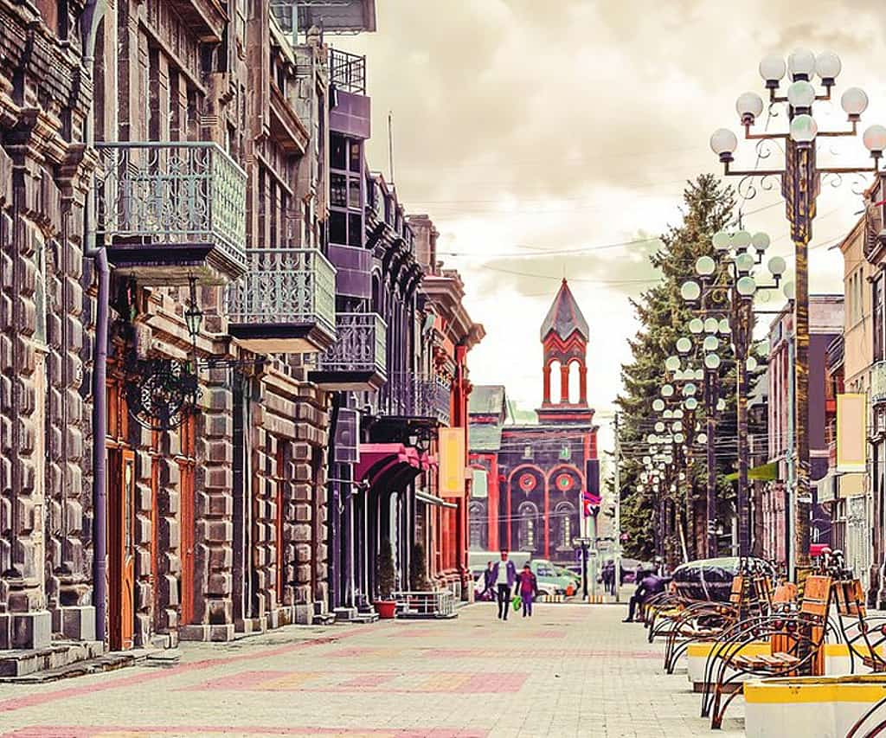
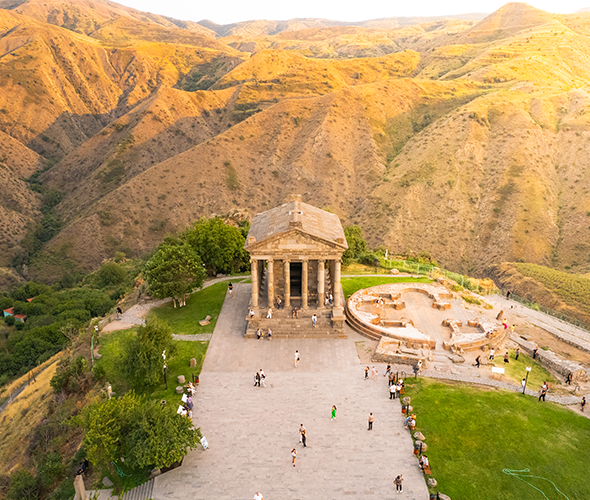
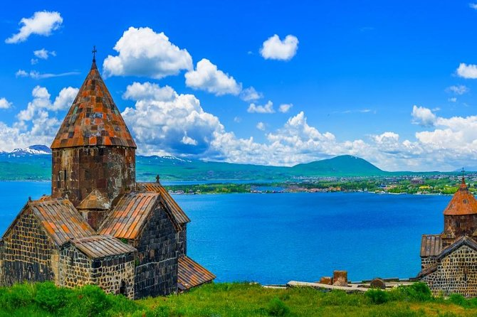

- Yerevan

- Yerevan is the capital of Armenia and is home to many amazing museums and cultural landmarks
- The Cascade Complex consists of a beautifully designed cascading staircase with gardens and a nearby arts center
- Republic Square displays fountains and ornate buildings with a beautiful Armenian flare
- Gyumri

- As another of Armenia's major cities, Gyumri is sure to please with its quaint streets and stunning basalt architecture
- Gyumri has an abundance of great cafes and cheap food
- Visit the Black Fortress, a formidable citadel built in the 1830s while Armenia was under the rule of the Russian Empire
- Garni Temple

- Garni Temple is a Hellenistic temple nestled in Armenia's majestic mountains
- Check out the temple and surrounding ruins, which are estimated to be nearly 2,000 years old!
- Lake Sevan

- No trip to Armenia is complete without a trip to the stunning, crystalline waters of Lake Sevan
- Sevanavank Monastery is beautifully situated by the lake and certainly deserves a visit!

Back to top